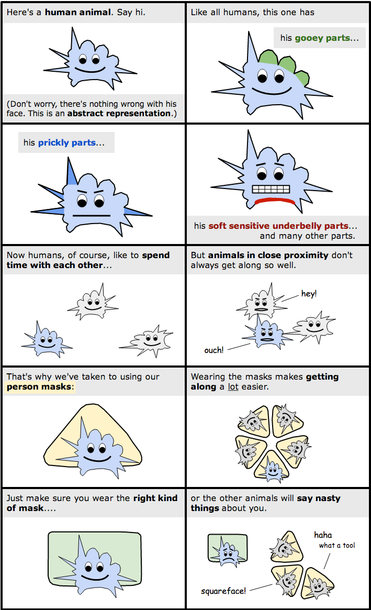

Being a person is not the essence of humanity, only... one of its many masks. — John Gray
Pardon me while I scratch a little itch here in public.
I'd like to describe for you a concept that I can see very clearly in my mind. I can't entirely justify its existence or its utility, but it's given me that consummate intellectual satisfaction: the feeling of ideas clicking into place.
When I think about human social interactions, I often think about specific relationships and the roles that they entail: husband and wife, citizen and representative, superhero and sidekick, BFFs. But today I want to talk about the most generic relationship — the one that exists between any two members of a society. What is the nature of that relationship? As an implicit social contract, what are its expectations and obligations?
I think it makes sense to call this generic social contract "personhood," and those who abide by it "persons."
Bear with me now. I realize these terms are hotly contested, not least because they're the focus of a number of longstanding legal and moral debates. Many would claim, for example, that a fetus is already a "person," and that therefore abortion is murder. But this is emphatically not the notion of personhood I want to discuss. So please: don't get hung up (yet) on whether my notion of "personhood" accords with yours. We may or may not be talking about the same thing.
The idea of a "person" that I'm going to use today is most similar to the idea of a "lady" or "gentleman" — without the gender connotations, obviously, but in the same sense of being a label or status earned through proper behavior (which then creates an obligation for others to treat us nicely in return).
So it's often said, "If you want to be treated like a lady, you have to act like a lady." And similarly, "If you want to be treated like a person, you have to act like a person." That's the idea I'm trying to get at.
Or like I wrote a couple months ago:
A person (as such) is a social fiction: an abstraction specifying the contract for an idealized interaction partner. Most of our institutions, even whole civilizations, are built to this interface — but fundamentally we are human beings, i.e., mere creatures. Some of us implement the person interface, but many of us (such as infants or the profoundly psychotic) don't. Even the most ironclad person among us will find herself the occasional subject of an outburst or breakdown that reveals what a leaky abstraction her personhood really is.
In other words, the concept of personhood that I'm articulating is both more and less than being human.
Here's the gist of the idea, illustrated as a comic strip. Pardon the low production values; I'm new at this:

The point is, when we act as persons, wearing our person masks out in public, we're acting within the framework of an implicit social contract — one that's designed to help us get along smoothly with our fellow persons.
Of course, this type of "contract" isn't a binary, all-or-nothing proposition. Instead, like all social phenomena, it admits of degrees. The way it works is that the more you behave like a person, the more you'll be treated like one. So it isn't a question of "whether" someone is a person, but rather "how much personhood" she has, based on how well she carries herself.
A screaming, pooping infant is less of a person than even the wildest 10-year-old, who in turn is less of a person than a fully-composed adult. Sociopaths have less personhood than honest folk, and drug addicts less personhood than their sober counterparts. Just as someone can be more or less of a lady, she can likewise be more or less of a person.
{kind=link}
Of course personhood, being an abstract behavioral specification, isn't reserved merely for humans. Any creature (or artifact) capable of presenting itself as a person will thereby earn the benefits. That's the beauty of an interface: as long as the system behaves properly, we don't have to care how it's implemented.
So today I'm going to explore the idea that personhood is a two-sided social contract, and specifically, one that is both contagious and sticky in human populations.
We'll start by elaborating on both the benefits and responsibilities of personhood.
The benefits of personhood
The rights or benefits of personhood are actually very simple. Being a person entitles you to conduct yourself among persons. Or to be precise: The more personhood you display, the more you'll be welcome in the society of persons.
(Note the recursive nature of this definition — persons being defined in terms of other persons. This is no accident. It will come up again and again, and we'll address it explicitly in a minute.)
We can be even more precise, if we like. Being a person earns you:
- The right to conduct yourself among persons — to show your face in the society of persons and to conduct business among them. Not just commercial business, of course, but also personal, social, professional, or political business.
- The right to be taken seriously. Other persons must accept you, and your words, promises, and reasons, more or less at face value.
- The right to be treated politely and accorded various personal dignities, like being called by your name (rather than "boy" or "hey you"), not being touched or gawked at, etc.
- The right to autonomy. Persons must refrain from coercing or using force against you.
- The right to be reasoned with. Other persons must give reasons for doing things that affect you.
The flip side of this, of course, is that when you don't uphold your end of the bargain (the responsibilities of personhood, which we will articulate below), you're no longer entitled to the benefits. Specifically you forfeit the most important benefit — the right to conduct yourself among persons — and consequently you'll be pushed to the margins of society, if not forcibly removed from it. This is how we treat children, criminals, the profoundly senile, and the profoundly psychotic.
The responsibilities of personhood
As you read the following — the responsibilities of personhood — remember that these are not arbitrary rules. Everything rests, very concretely, on the logic of whether a particular behavior makes it easier or harder for others to interact with you. If I say, "X is important for personhood," it's not because I have a prejudice that persons should do X. It's because, objectively, not doing X makes it harder for other persons to be around you.
Here, then, are the responsibilities or criteria of personhood. The more of these you're able to meet, the more of a person you'll be:
Identifiability
This one's a good place to start. You can't be a person unless you have a name and a face — a way for others to identify and recognize you. This is a pretty basic requirement for e.g. reciprocal altruism.
Note the implication: You become less of a person when you're wearing a mask or are otherwise anonymous. Shedding the responsibilities of personhood in this way can be quite thrilling, like during Halloween or at a masquerade ball (or while robbing a convenience store!). But it also contributes to the degradation of personhood on the internet — with the ensuing loss of civility we're all familiar with.
Integrity
This is now closer to what we might call the heart or substance of personhood: the consistency and integrity of one's statements and behaviors.
What does it mean to have integrity? Well it's a number of related things. It means being whole-faced, not two-faced. It means being honest and true to your word, fulfilling your promises and upholding your obligations. It means having consistent preferences, especially across time— even though (as an animal) your mood will surely change.
In a nutshell, having integrity means maintaining the facade of good-faith, singular agency.
Of course we all grant each other plenty of leeway to change our minds — it's not like one flip-flop will get you kicked out of the club. But if you change your mind often enough, or continue to state preferences that you later deny, sooner or later you'll end up frustrating your fellow persons.
Small children fail spectacularly in the integrity department. They'll make 'promises' that they have no intention or even the ability to keep. They'll lie, just to get their way in a particular moment. They'll change their minds willy-nilly, blowing hither and thither along with internal and external winds. A large part of growing up, then, consists of internalizing the social consequences of failing to maintain integrity. The world slowly ratchets up its expectations of integrity (and of personhood more broadly), and the child must slowly rise to the challenge. In this way, growing up can be seen as an exercise in sharpening one's personhood. This process is also known as socialization.
Reasonable-ness or use of reasons
The society of persons runs on the "currency" of reasons. This isn't a real currency, of course, just a metaphorical one — but the metaphor is fairly strong. We give each other reasons, accept or reject the reasons of others. Reasons, like money, can be good/bad/sound/etc., and we are always (like a shopkeeper being handed a suspicious-looking bill) evaluating the reasons of others, testing them for soundness. Sometimes we're called upon to give an account of our behavior, i.e., to show our reasons as we might open our books to an auditor. In fact we're auditing each other so frequently that we've created a strong incentive to produce counterfeit reasons: pretexts, confabulations, rationalizations, justifications, etc. We even dabble in credit, as in giving credit to a friend when he behaves strangely, but when we don't know the full story, or in giving someone the "benefit of the doubt," though his reasons may seem a bit fishy.
But(!) however tricky it is to peddle in reasons — however prone such a currency is to inflation, debasement, and Gresham's Law — it beats the knickers off the alternative: violence. Threats, counter-threats, shoving or shouting matches. If you want one of your fellow humans to undertake a specific action, it's far more civilized to ply him with reasons than coerce him with fists.
So the criterion of 'reasonable-ness' actually devolves into two related criteria:
- Giving reasons i.e. legibility. When called upon, you must be able to provide reasons for all of your (non-trivial) social actions. You don't need a good 'reason' for automatic/habitual bodily movements like leaning back in your chair, but if you get up and walk out of a meeting, you'll need something better than "I just felt like it." In other words, you need to know yourself and be able to explain yourself to others, in order to provide the illusion of being scrutable.
- Accepting reasons i.e. amenability. You don't always have to accept reasons from other persons — lord knows how many of them are counterfeit — but you must accept them often enough to show others that you're reasoning in good faith. When we ply each other with reasons, we're often testing the waters to see how amenable our associates are (vs. irrationally committed to their prejudices). Similarly, if someone gives you overwhelmingly good reasons for a particular course of action, you'll forfeit personhood by not going along with it.
Standing
This one's a little weird, but extremely important. In order for others to do business with you — accept your reasons and promises on credit — you need to have something to lose; you need some table stakes or collateral. Let's call this standing.
Standing can mean simply "good standing in the community," where through a history of past behavior you demonstrate to the community that it's something you respect and value (and thus would be hurt by losing access to it). Or it can mean stature or status — some kind of reputation.
The concept of "legal standing" focuses on the right to sue. But the right to be sued is equally if not more important(!).
Here's Thomas Schelling from The Strategy of Conflict:
Among the legal privileges of corporations, two that are mentioned in textbooks are the right to sue and the "right" to be sued. Who wants to be sued! But the right to be sued is the power to make a promise: to borrow money, to enter a contract, to do business with someone who might be damaged. If suit does arise, the "right" seems a liability in retrospect; beforehand it was a prerequisite to doing business.
Think about that for a minute. The right to be sued is a privilege.
You need some 'skin in the game' before anyone will be willing to trust you. If you have nothing to lose — if you just drifted into town, for example, and have no reputational capital here — what incentive do you have not to lie and make false promises, or otherwise violate the contract of personhood? Society can't trust you unless it has you by the short hairs.
Children, for example, lack "standing" in this way. We've all agreed to "go easy on them" if they mess up — to send them to juvenile hall instead of jail, in the extreme case. But this very leniency also undermines their personhood. Imagine a 12-year-old — a particularly precocious one — trying to comport himself among full adult persons. Everyone would eye him with suspicion, knowing (at least in the back of their minds) that he has less at stake in his interactions. Now imagine instead that this 12-year-old signed some kind of (hypothetical) contract, committing him to adult standards of punishment. Does he not instantly become that much more trustworthy, more of a person?
When conservatives emphasize the importance of personal responsibility, I think this is what they're talking about. The less we hold ourselves responsible for our actions (ex ante), the less we can be trusted to act properly. And an important corollary of this: The more lenient society is with its members, the weaker the social contract, and the harder it is for everyone to interact with each other — a sobering thought.
Autonomy
Persons must be, broadly, the authors of their own actions.
If you outsource your agency to someone else (e.g. by becoming a slave or a lackey), you undermine your own personhood. Insofar as slaves are not the true authors of their own actions, it's much harder to reason with them ("because my boss said so," isn't a very satisfying response), harder to accept their promises, etc. When you aren't your own master, the rest of the personhood contract breaks down.
This is true, but to a lesser extent, among e.g. husbands who are "whipped" by their wives. A group of men who want to stay out late playing poker can't reason with their whipped buddy; all of their reasons fall on deaf ears. And thus he loses a bit of personhood within that community.
One of the common ways people outsource their agency is acting "in the name of" someone or something else. This is how workers in uniform — police, soldiers, etc. — become non-persons to the populations they interact with. You can't use the full spectrum of reasons, or enter into a free contract, with a policewoman who's "just doing her job."
Proper comportment
The way you "carry yourself" goes a long way to how you'll be treated.
This starts (but does not end) with how you carry yourself physically. It's obvious, but you have to wear clothes in order to be taken seriously. ("Clothes make the person" might be more accurate than "Clothes make the man.") You have to maintain basic hygiene or no one will want to stand next to you. You have to dispose of your bodily fluids (urine, feces, spit, mucus, ear wax; coughing, sneezing) in ways that don't offend your fellow persons.
But proper comportment extends beyond your physical person to encompass all the behaviors of your social person (or persona). It requires you to take proper ritual care for your own 'face' (having self-respect) and the 'faces' of others (being considerate). We can phrase this recursively: "You must treat other persons as persons." This starts with a strict prohibition on violence and coercion, and extends to any act that even hints at such.
Here's Erving Goffman from his sublime book Interaction Ritual:
In our society, the "well" or "properly" demeaned individual displays such attributes as: discretion and sincerity; modesty in claims regarding self; sportsmanship; command of speech and physical movements; self-control over his emotions, his appetites, and his desires; poise under pressure; and so forth.
Proper use of social emotions
This is really a subset of proper comportment, but it's so important that I thought it deserved its own section.
The reason it's important is because emotions are evolved and universal. In other words, we get most of these things for 'free,' simply by virtue of being born a human animal. Thus the social emotions provide a strong platform on which to develop all the other components of personhood.
The key social emotions are:
- Shame. Persons should feel ashamed (and act accordingly, e.g., hide their faces) whenever their personhood breaks down in public. This includes everything from being caught naked or in a lie, to being late, to having one's reasons shown to be contradictory. Sometimes you can lose more personhood by failing to show the requisite shame, than by the shameful act itself.
- Anger. When you are violated in some way, it's natural and right to get angry. But you must not get angry unless violated, and you must direct your anger only at the offending party. To be a "loose cannon" is clearly dangerous to those who would associate with you. Additionally, your anger needs to be soothe-able, within reason, with the proper appeasements, i.e., shame and remorse.
- Remorse. You must show (and feel) genuine remorse/contrition when your actions cause harm to another person.
Of course there are all sorts of edge cases to debate here (e.g. about how much shame, anger, or remorse it's appropriate to demonstrate in different scenarios), and it's understandable that we spend so much time in these debates. But the point here is not to debate the edge cases, but rather to acknowledge that they exist with regard to a common framework we all participate in.
* * * *
So that's the contract of personhood.
If you want to be treated like a person, you have to act like a person. If you want to be welcome among persons, you have to be a good interaction partner.
Now let's explore some of the more interesting corollaries.
The recursive/circular nature of personhood
This is the most important part of the essay.
I've already pointed out a few of the ways in which personhood is defined somewhat recursively. Personhood only makes sense with respect to (pre-existing?) persons. For example:
- A person is a human being accepted by other persons for generic social interactions.
- Persons are the result of a civilizing process, and can only be civilized by other persons.
- Persons must treat other persons as persons.
You might find the circularity of these definitions a bit disconcerting, but I will argue that it's absolutely essential to the idea of personhood. What the circular/recursive nature of personhood means is that it will be a stable attractor in social-contract space. It also means that personhood is both contagious and sticky in human populations.
Once the idea of personhood gets started within a community (more on this in just a minute), most humans will eventually get sucked in. That's because personhood exhibits network effects — the more the merrier. Person-Person relationships are more productive and mutually beneficial than Person-Nonperson or Nonperson-Nonperson relationships. Thus the economics dictate that personhood will come to dominate the population, so that almost everyone who is able to meet the requirements of personhood is eventually inducted into its sacred order. Anyone who doesn't 'play along' will be left out in the cold.
Here's another, related way to put it: Spend enough time around other persons and they will probably infect you with personhood. How? By rewarding you for person-like behaviors and punishing you for non-person-like behaviors.
This is how we socialize our children. 'We' (the society of persons) systematically reward children for behaving like persons and punish them when they don't. This happens at home, via the parents, and at school, via the teachers — but also via the other children who, though they are only proto-persons themselves, can nevertheless help refine each other. And note that there hardly needs to be any explicit teaching involved — let alone any understanding of what 'personhood' is or how it works. The only mechanism necessary to achieve personhood is this: a child who acts more like a person will experience smoother, more productive interactions with all the persons in her life, versus experiencing friction every time she acts like a non-person. Take this differential treatment, point a general-purpose reinforcement learning algorithm at it, and out pops a person.
So how does personhood get off the ground in the first place? Where did we get the first persons, who then helped drag everyone else into the game?
This turns out to be much less of a challenge than it might appear. The trick to getting all complex things off the ground — with the exception of airplanes and rockets (and that's pretty much it) — is not to do it in one stroke but rather in very small increments. So you don't need to start with fully-formed personhood to get some of the advantages. Instead you can start with proto-proto-proto-personhood — a weak, primitive, simplified version of the personhood contract — which then becomes stabilized throughout a population (because it provides benefit), until slowly everyone realizes that they can tighten the contract into proto-proto-personhood... — and then eventually into full personhood.
These steps can be arbitrarily fine-grained. In fact, in the history of humankind, there were probably dozens of incremental steps toward personhood, no doubt along with a few backward steps at various times and places. The period after the fall of the Roman Empire could, for example, be analyzed as an attempt to find solid ground for a new social contract once the old one, Roman citizenship, had given way.
The simplest contract — if the story of the Fall in Genesis has any psychological truth to it — might be the one that says "humans must wear clothes, or else feel ashamed (i.e., hide and withdraw from society)." It seems important that shame is the very first thing Adam and Eve experience after they eat the forbidden fruit:
When [Eve] saw that the fruit of the tree was good for food and pleasing to the eye, and also desirable for gaining wisdom, she took some and ate it. She also gave some to her husband, who was with her, and he ate it. Then the eyes of both of them were opened, and they realized they were naked; so they sewed fig leaves together and made coverings for themselves.
Then the man and his wife heard the sound of the Lord God as he was walking in the garden in the cool of the day, and they hid from the Lord God among the trees of the garden.
Shame is indeed the civilizing emotion.
Where personhood breaks down
With a lot of complex things (e.g. governments, the brain, computers), it's often hard to see how they work when they're functioning properly. It's only when they start to break down or come apart that we see the true nature of what's going on. The seams show us how it was made.
Same thing with personhood. So let's look at some cases where it breaks down.
Personhood breaks down most dramatically in children, as we've already seen. Children uphold fewer of the responsibilities of personhood, and so they are accorded fewer of the benefits.
Personhood breaks down (very mildly) in those who can't maintain proper hygiene. Most of us have had the experience of a classmate or coworker who smells bad or doesn't wash his hair, and such people aren't invited to spend as much time among those of us who keep ourselves clean. It's not that they suddenly become non-persons; they're just slightly less welcome as a result of their small violation of the contract. This is one reason that even the very poorest people often obsess over their appearance.
Personhood breaks down in severe drug addicts. Because the addict lacks self-control, he can't be reasoned with or trusted to keep promises. At first the addict is simply marginalized, pushed away from polite society. But if his condition deteriorates, and if he has friends and loved ones who care enough (notably, those bound to him by relationships other than personhood), they may stage an intervention. This is tantamount to stripping the addict of his personhood (rendering him persona non grata), and it's telling that an intervention is a communal affair involving mutual recognition (common knowledge) of the consensus. This will be embarrassing and uncomfortable for everyone — both the addict and his loved ones — because of how much we rely on the contract of personhood in our normal, everyday interactions.
Personhood, it should be noted, is always a fiction: the fiction of being a consistent, singular agent. But as long as the fiction is convincing enough, it will pass muster and be accepted by other persons. An addict's problem, then, is just that he can't maintain the fiction as convincingly as the rest of us.
Personhood breaks down (very mildly) in fanatics and ideologues. We've all had the displeasure of arguing with a raving fanboy or someone in the grips of an ideology. When good reasons fall on deaf ears, we're seeing evidence of a small breakdown in personhood.
Personhood breaks down in Storm Troopers, soldiers, and faceless bureaucrats. The individual units within these bureaucracies have no names (or their names are meaningless across the divide that separates them from the populations they interact with), sometimes no faces, no individual identity, and very little autonomy. They can't be shamed or reasoned with. The same is true, but to a lesser extent, of anyone who wears a uniform. Uniforms are everywhere a signal that the wearer is enacting a role in which his agency is outsourced and his individuality is suppressed. This can be a source of power, but it can also be degrading, e.g., having to wear a uniform to work.
Perhaps most importantly, personhood breaks down in the presence of other relationships. Remember, personhood is the most generic social role — so other, more specific roles usually supersede it. Husbands and wives, for example, don't have to wear clothes around each other. A commanding officer in the military doesn't owe his subordinates any reasons. Good friends can let down their guards and be a little more familiar with each other. (Etymology note: familiar derives from the Latin famulus, meaning house-servant.) But in most cases, personhood still lurks in the background, and in this way provides a foundation on which to build out other, more specific relationships. Friends still interact with each other largely as persons, even as they relax a few of the constraints.
One of the most dramatic breakdowns of personhood occurs merely by labeling someone as "mentally ill." This starts a downward spiral in which people stop treating the patient as a full person, and as a result she becomes less incentivized to act as one. They may or may not subject her to various indignities (like restricting her freedom), but what's equally corrosive is when they stop holding her to the same standards as everyone else. As a result, she becomes less incentivized to hold up her end of the personhood bargain, further justifying the treatment others are subjecting her to. In this way, the virtuous feedback loop that normally upholds and reinforces personhood — the feedback that coaxes behavior toward ever more integrity, consistency, and good manners — breaks down, and a vicious feedback loop takes its place. When back-ward psychiatric patients start smearing their feces on the walls, it's because they're at the bottom of this vicious cycle, and resort to forms of attention-grabbing and manipulation that lie outside the personhood contract.
Not all labels of mental illness degrade one's personhood, of course. It depends on how severe the illness is. It also depends, crucially, on how frequently other persons (and the patient herself) explain her actions as arising from the illness, instead of arising from everyday reasons and motives. If she breaks a promise and her friends chalk it up to depression, then she's in more trouble than if they simply shrugged and said, "Pffft, what a flake." This accounts for some of our reluctance to share mental-health diagnoses with our broader network of acquaintances and coworkers.
A final thought: Aspergers
People with Asperger Syndrome force us to confront personhood in a rather peculiar way: by using a self-consistent variant on the traditional contract.
Relative to 'neurotypicals,' Aspies seem to care much more about, and put much greater emphasis on, the criteria of integrity and use of reasons. They have a heightened sensitivity to these dimensions of personhood, and prickle more when others make contradictory statements, for example, or shrug off reasons in favor of "intuition." On the other hand, Aspies seem to care much less about, and put far less emphasis on, the criteria of politeness, proper comportment, and the proper use of social emotions — owing, perhaps, to a dulled sensitivity.
What's most intriguing, here, is that Aspie personhood is reflexive: it reinforces itself and produces its own network effects. Put ten Aspies in a room together and they'll have a glorious time, exchanging all sorts of information — mutually and blissfully ignorant of each other's (quote/unquote) faux pas. In other words: Aspie personhood harmonizes with itself. This is in stark contrast to the way e.g. schizophrenic patients interact with each other.
But Aspie personhood clashes with neurotypical personhood and vice versa. Any mixture of the two populations will be discordant; someone is bound to take offense. Either an Aspie will bristle at some (seemingly) contradictory statement made blithely by a neurotypical, by taking it too literally, or a neurotypical will bristle at some rude social gesture made inadvertently by an Aspie, by taking the 'affront' too seriously.
In this way, Aspies are like the squareface in the comic strip I included up top. Squares get along great with squares, and triangles with triangles, but although the two populations can get along with each other, they often rub each other the wrong way.
___
Update 2015/09/22: Since a number of readers have misunderstood, I want to clarify that this essay is entirely descriptive. I'm not making any kind of normative point, e.g., "If you don't meet certain criteria, it's morally OK for others to trample all over you." I'm saying that the personhood contract (and related behaviors) emerge naturally whenever humans interact with each other. It's simply a fact that children and alcoholics don't get treated as full members of society, largely because they can't carry themselves properly. But that certainly doesn't mean it's OK to abuse them or subject them to arbitrary mistreatment. They're still human beings, after all, and worthy of being treated humanely — only it's empathy, not the logic of personhood, that argues for it.
Thanks to Lee Corbin for some excellent discussions that helped tease out much of this subject matter.